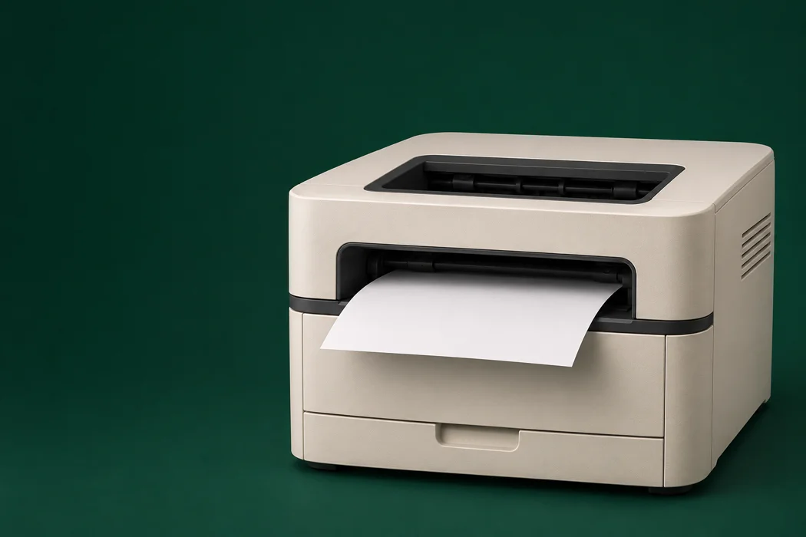

My printer
Set it up once. Check and fix whenever you need to.

Demo printer
Office printer
\\PRINT-HOST\Office
Connection
- Type
- Shared printer
- Location
- PRINT-HOST
- Windows default
- No
Last check
No check run yet.
Diagnose
Read the Windows queue.
Apply repair
Run an eligible repair.
Verify
Check the queue again.
Technician console
Inspect the queues, drivers and ports on the demo print host.
| Printer | Connection | Status | Jobs | Action |
|---|---|---|---|---|
| Office printer | Windows share | Connection issue | 0 | |
| Reception printer | USB | Ready | 0 | |
| Floor 2 printer | TCP/IP | Offline | 1 |
About this mockup
Does this mockup change my Windows printer?
This browser mockup simulates checks and repairs with demo data.
How do I change the saved printer?
Select Set up printer or Change printer, choose a demo queue, and save it.
Where are the driver and port lists?
Open Technician console and choose Drivers or Ports.
What does the report contain?
The demo report contains check outcomes and uses report-local IDs for queues.